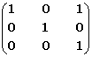
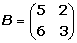
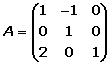
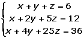
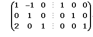
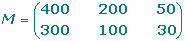
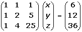

Ejercicios y problemas de matrices
1Dadas las matrices:

Calcular:
A + B; A − B; A x B; B x A; At.
2Demostrar que: A2 − A − 2I = 0, siendo:

3
Sea A la matriz . Hallar An , para n 

4Por qué matriz hay que premultiplicar la matriz

para que resulte la matriz .
5Calcular la matriz inversa de:

Obtener las matrices A y B que verifiquen el sistema:

7 Una fábrica produce dos modelos de lavadoras, A y B, en tres terminaciones: N, L y S. Produce del modelo A: 400 unidades en la terminación N, 200 unidades en la terminación L y 50 unidades en la terminación S. Produce del modelo B: 300 unidades en la terminación N, 100 unidades en la terminación L y 30 unidades en la terminación S. La terminación N lleva 25 horas de taller y 1 hora de administración . La terminación L lleva 30 horas de taller y 1.2 horas de administración . La terminación S lleva 33 horas de taller y 1.3 horas de administración .
1. Representar la información en dos matrices.
2. Hallar una matriz que exprese las horas de taller y de administración empleadas para cada uno de los modelos.
8 Calcular el rango de la matriz siguiente:

9 Siendo:

Calcular el valor de X en las siguientes ecuaciones:

10Resolver; en forma matricial, el sistema:

- 1
- 2
- 3
- 4
- 5
- 6
- 7
- 8
- 9
- 10
Ejercicio 1 resuelto
Dadas las matrices:
Calcular:
A + B; A − B; A x B; B x A; At.


Ejercicio 2 resuelto
Demostrar que: A2 − A − 2 I = 0, siendo:

Ejercicio 3 resuelto
Sea A la matriz . Hallar An , para n ∈ 

Ejercicio 4 resuelto
Por qué matriz hay que premultiplicar la matriz

para que resulte la matriz
.
Ejercicio 5 resuelto
Calcular la matriz inversa de:
1. Construir una matriz del tipo M = (A | I)

2. Utilizar el método Gauss para transformar la mitad izquierda, A, en la matriz identidad, y la matriz que resulte en el lado derecho será la matriz inversa: A−1.
Ejercicio 6 resuelto
Obtener las matrices A y B que verifiquen el sistema:
Multiplicamos la segunda ecuación por −2

Sumamos miembro a miembro

Si multiplicamos la primera ecuación por 3 y sumamos miembro a miembro obtenemos:

Ejercicio 7 resuelto
Una fábrica produce dos modelos de lavadoras, A y B, en tres terminaciones: N, L y S. Produce del modelo A: 400 unidades en la terminación N, 200 unidades en la terminación L y 50 unidades en la terminación S. Produce del modelo B: 300 unidades en la terminación N, 100 unidades en la terminación L y 30 unidades en la terminación S. La terminación N lleva 25 horas de taller y 1 hora de administración . La terminación L lleva 30 horas de taller y 1.2 horas de administración . La terminación S lleva 33 horas de taller y 1.3 horas de administración .
1 Representar la información en dos matrices.
2 Hallar una matriz que exprese las horas de taller y de administración empleadas para cada uno de los modelos.
Matriz de producción:
Filas: Modelos A y B Columnas: Terminaciones N, L, S

Matriz de coste en horas:
Filas: Terminaciones N, L, S Columnas: Coste en horas: T, A

Matriz que expresa las horas de taller y de administración para cada uno de los modelos:

Ejercicio 8 resuelto
Calcular el rango de la matriz siguiente:
F1 − 2 F2

F3 − 3 F2

F3 + 2 F1

Por tanto r(A) =2.
Ejercicio 9 resuelto
Siendo:
Calcular el valor de X en las siguientes ecuaciones:

Ejercicio 10 resuelto
Resolver; en forma matricial, el sistema:

 Ejercicios
Ejercicios